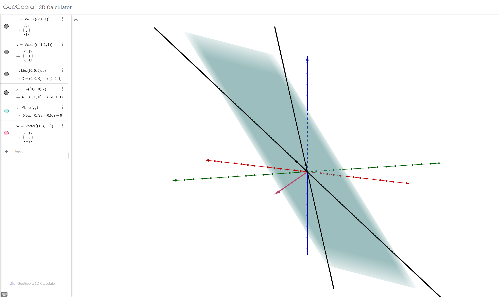

Produs scalar și ortonormare
Contents
Produs scalar și ortonormare#
Titlul este intimidant, însă vă vom convinge că noțiunile prezentate au origini binecunoscute și pornesc din nou de la geometria clasei a IX-a.
Termenul-cheie pe care îl urmărim este acela de versori. Dacă vă sună cunoscut sau chiar vă amintiți ce sînt versorii, atunci veți intui direcția care ne interesează.
Geometrie euclidiană#
Înaintea definițiilor concrete, să dăm cîteva explicații despre geometria euclidiană. Aceasta este o noțiune care se întîlnește des, iar de multe ori, apare într-un context împreună cu complementara sa, geometria neeuclidiană.
Euclid din Alexandria (cca. sec. III î.e.n.) a fost unul dintre primii matematicieni moderni, am putea spune. Nu numai că a adus contribuții esențiale în geometrie (pentru care este cunoscută în special colecția sa de 13 volume intitulate generic Elementele, dar în aceeași lucrare găsim și primele exemple sistematice de teoreme însoțite de demonstrații, axiome și raționamente matematice complexe.
În contextul actual, ne interesează contribuțiile lui la geometrie și, mai general, ce fel de geometrie a studiat și a propus Euclid – cea care a ajuns să-i poarte numele.
În geometria euclidiană, două concepte sînt fundamentale: lungimile (distanțele) și unghiurile. Aceasta și prin faptul că în perioada respectivă, se lucra adesea la probleme de construcții cu rigla (negradată) și compasul. Astfel că dreptele și segmentele, împreună cu arcele de cerc erau prezente în majoritatea problemelor de matematică.
Așadar, fără alte detalii pentru moment, reținem că pentru a studia geometrie euclidiană, avem nevoie să putem măsura lungimi (de segmente) și măsuri de unghiuri.
Planul real#
Am văzut că într-un spațiu vectorial este suficient să putem calcula suma vectorilor, pentru că în ce privește un produs al acestora, de pildă, există mai multe noțiuni.
Una dintre acestea este produsul scalar, care, așa cum îi arată numele, produce un scalar din doi vectori. Noțiunea este cunoscută încă din clasa a IX-a și o recapitulăm aici, în contextul actual.
Fie, așadar, doi vectori din plan, \( \vec{v} = a \vec{i} + b \vec{j} \) și \( \vec{w} = c \vec{i} + d \vec{j} \), cu \( a,b,c,d \in \mathbb{R} \).
Produsul scalar al celor doi vectori se poate defini în două moduri:
prima formulă folosind doar coordonatele vectorilor, iar cea de-a doua – care a fost întîlnită în special în lecțiile de mecanică – folosește modulul (sau lungimea) vectorilor și unghiul dintre dreptele lor suport.
Deja vedem că în a doua formulă întîlnim cele două noțiuni din geometria euclidiană: lungimile și măsurile unghiurilor.
Legătura între cele două formule se poate face folosind noțiunea de lungime definită tot cu ajutorul produsului scalar:
adică pătratul lungimii unui vector este egal cu produsul scalar cu el însuși.
Așadar, folosind doar produsul scalar, avem acces atît la lungimi, cît și la unghiuri, cu ajutorul funcției cosinus.
De aici deducem și alte două cazuri speciale, privitoare la versori. Vectorii \( \vec{i} \) și \( \vec{j} \) pe care îi folosim pentru a descompune orice vectori din plan au două proprietăți importante:
sînt perpendiculari1: \( \vec{i} \perp \vec{j} \);
au lungime \( 1 \).
Perpendicularitatea este o proprietate care rezultă imediat cu ajutorul produsului scalar. Dată fiind definiția cu ajutorul lungimilor și cosinusului și ținînd cont de faptul că \( \cos \dfrac{\pi}{2} = 0 \), găsim:
relație care, așa cum vom vedea, se extinde în orice spațiu vectorial.
O modalitate foarte clară de vizualizare a produsului scalar dintre un vector
arbitrar și un vector unitate, ca dependență de unghiul dintre ei, este
în imaginea de mai jos, preluată de pe pagina de Twitter a Freya Holmér (@FreyaHolmer):
dot product - visualized ⚪
— Freya Holmér (@FreyaHolmer) November 30, 2019
the dot of two normalized vectors, as shown here, can say how similar they are
a • b = 1, same direction
a • b = 0, perpendicular
a • b = -1, opposite directions
you might also be able to see why it's sometimes called scalar projection~ pic.twitter.com/vg8TwNZ8qs
Așadar, reținem că încă din geometria în plan studiată în clasa a IX-a avem deja o definiție pentru produsul scalar, care ne ajută să obținem ingredientele necesare geometriei euclidiene. Vom vedea că putem extinde acest lucru foarte ușor pentru orice spațiu vectorial.
Spații euclidiene#
După introducerea de mai sus, trecem la cazul general. Disponibilitatea unui produs scalar am văzut că deschide posibilitatea studiului geometriei euclidiene în plan. La fel stau lucrurile în orice spațiu vectorial și de aceea, spațiile pe care putem defini un produs scalar se numesc euclidiene.
Definiția generală a produsului scalar pare complicată la prima vedere, însă ea se inspiră destul de clar din cazul planului.
Vom prezenta doar cazul spațiilor vectoriale reale, nu numai pentru că acesta va fi singurul pe care îl vom studia pentru aplicații, ci și pentru faptul că în cazul complex, de exemplu, definițiile sînt ușor diferite.
Definition 37
Fie \( V \) un spațiu vectorial real.
O aplicație de forma:
se numește produs scalar dacă are proprietățile:
Pozitiv definire: \( \langle v, v \rangle \geq 0, \forall v \in V \), cu egalitate dacă și numai dacă \( v = 0_V \);
Simetrie: \( \langle v, w \rangle = \langle w, v \rangle, \forall v, w \in V \);
Liniaritate în primul argument: \( \langle \alpha v + \beta w, u \rangle = \alpha \langle v, u \rangle + % \beta \langle w, u \rangle, \forall \alpha, \beta \in \mathbb{R}, v, w, u \in V \);
Liniaritate în al doilea argument: \( \langle v, \alpha w + \beta u \rangle = \alpha \langle v, u \rangle + % \beta \langle v, u \rangle, \forall \alpha, \beta in \mathbb{R}, v, w, u \in V \).
Dacă pe un spațiu vectorial real \( V \) putem defini o aplicație cu proprietățile de mai sus, atunci spațiul se numește euclidian.
Se vede ușor că acest caz general se rezumă la binecunoscuta situație din plan prezentată mai sus. De fapt, este suficient să dăm un singur exemplu pentru spații vectoriale finit dimensionale, și, folosind corolarul Corollary 1, le vom avea pe toate pentru aceeași dimensiune.
Exemplu fundamental: \( \mathbb{R}^n \)#
Fie, așadar, spațiul vectorial real \( \mathbb{R}^n \).
Pentru orice doi vectori \( v = (v_1, \dots, v_n), w = (w_1, \dots, w_n) \in \mathbb{R}^n \), se definește aplicația:
Un exercițiu simplu ar fi să demonstrați că această definiție corespunde produsului scalar, deci într-adevăr, \( \mathbb{R}^n \), cu aplicația de mai sus, devine spațiu euclidian.
Alte exemple#
Pornind de la acest exemplu, obținem și alte cazuri, via izomorfisme canonice.
De pildă, cum \( \mathbb{R}^4 \simeq M_2(\mathbb{R}) \) printr-o aplicație de forma:
găsim că și spațiul de matrice \( 2 \times 2 \) este euclidian, cu produsul scalar:
Similar, de exemplu, deoarece \( \mathbb{R}^3 \simeq \mathbb{R}_2[X] \) printr-o aplicație de forma:
avem și că spațiul de polinoame de grad cel mult 2 este euclidian, cu produsul scalar:
Astfel de structuri ne permit să obținem rezultate intuitiv ciudate, însă clare din punct de vedere matematic.
Versori#
În plan, vectorii \( \vec{i} \) și \( \vec{j} \) sînt versori, adică perpendiculari și cu lungime 1. Putem generaliza aceste noțiuni, tot cu ajutorul produsului scalar.
Note
Dacă nu se precizează altfel, vom presupune că produsul scalar se notează cu \( \langle \cdot, \cdot \rangle \) pe orice spațiu euclidian este definit.
Definition 38
Fie \( V \) un spațiu euclidian.
Norma unui vector – care generalizează conceptul de lungime – se definește prin:
Doi vectori \( v, w \in V \) se numesc perpendiculari sau ortogonali dacă \( \langle v, w \rangle = 0 \).
Generalizarea noțiunii de versori se găsește în conceptul de ortonormare:
Definition 39
Fie \( V \) un spațiu euclidian și \( O = \{ v_1, \dots, v_n \} \) o mulțime de vectori din \( V \).
Spunem că mulțimea \( O \) este ortonormată dacă:
\( \langle v_i, v_j \rangle = 0, \forall 1 \leq i \neq j \leq n, v_i, v_j \in O \);
\( || v_i || = 1, \forall v_i \in O, 1 \leq i \leq n \).
Prima condiție mai poate fi scrisă concis folosind simbolul delta al lui Kronecker, \( \delta_{ij} \). Acesta se definește astfel:
Folosindu-l, prima condiție se poate scrie simplu:
Condiția de ortogonalitate de fapt provine dintr-o noțiune mai generală, inspirată tot din cazul plan:
Definition 40
Fie \( V \) un spațiu euclidian și \( v, w \in V \) doi vectori arbitrari.
Se definește cosinusul unghiului dintre \( v \) și \( w \) numărul real2:
Evident, în acest caz nu mai avem o interpretare vizuală a unghiului dintre doi vectori ai unui spațiu euclidian arbitrar, dar în orice caz, noțiunea are sens și putem chiar extrage măsura unghiului dintre doi vectori arbitrari, folosind, eventual, un tabel de valori și/sau funcția \( \arccos \)3.
Revenind la exemple, putem acum să studiem chiar cazuri de matrice ortogonale sau unghiul dintre două polinoame, foarte simplu. Folosind produsul scalar de mai sus, avem, de pildă, pentru două polinoame din \( \mathbb{R}_2[X] \):
sau pentru două matrice din \( M_2(\mathbb{R}) \):
Remarcăm din nou că astfel de situații nu sînt neapărat intuitive, nu se pot vizualiza ca în cazul vectorilor din plan sau din spațiul tridimensional. Însă ele arată puterea pe care o are tehnica abstractizării: dacă definim cu atenție noțiuni precum lungime, unghi și altele, le putem aplica în tot mai multe cazuri.
Distanțe#
Pentru completitudine, să adăugăm și definiția generală a distanței. Ideea principală este, ca în cazul lungimilor și unghiurilor, să vedem cum o noțiune aparent adînc înrădăcinată în vizual, în geometrie în plan sau în spațiu, poate fi generalizată foarte ușor.
În cazurile cunoscute, distanța se definește astfel:
între două puncte: este lungimea segmentului care are cele două puncte drept capete;
între un punct și o dreaptă: este lungimea perpendicularei dusă din punct pe dreaptă;
între două drepte paralele: este distanța de la un punct arbitrar de pe una dintre drepte la cealaltă dreaptă;
între două plane paralele: este distanța dintre două drepte incluse în plane.
În vederea generalizării către un spațiu vectorial oarecare, avem cel puțin două obstacole:
noțiuni precum „punct“, „dreaptă“, „plan“ nu se definesc în general;
noțiunea de perpendicularitate (ortogonalitate, în general) este incomodă și, împreună cu primul obstacol, imposibil de utilizat.
Așa că nu putem avea aceeași înțelegere a distanței pe baza intuiției geometrice și va trebui să ne rezumăm la a-i prelua proprietățile. Orice distanță între două obiecte (puncte, drepte, plane etc.):
este nulă sau strict pozitivă;
este simetrică (distanța de la obiectul \( A \) la obiectul \( B \) este aceeași cu distanța de la obiectul \( B \) la obiectul \( A \));
este, într-un anume sens, cel mai scurt drum între cele două obiecte4.
Așadar, definiția generală a distanței urmează.
Definition 41
Fie \( V \) un spațiu euclidian și \( d : V \times V \to [0, \infty) \) o funcție.
\( d \) se numește distanță sau metrică dacă:
\( d(v, v) \geq 0, \forall v \in V \), cu egalitate dacă și numai dacă \( v = 0_V \);
\( d(v, w) = d(w, v), \forall v, w \in V \);
\( d(v, w) \leq d(v, u) + d(u, w), \forall u, v, w \in V \).
A treia proprietate se mai numește inegalitatea triunghiului, deoarece se folosește și drept condiție de existență a unui triunghi: Putem vorbi despre \( \Delta ABC \) dacă și numai dacă \( AB \leq AC + CB \).
Așadar, orice funcție care transformă doi vectori într-un scalar și care are proprietățile de mai sus se numește distanță.
De fapt, riguros vorbind, am trișat puțin. Distanțele se pot defini și pe spații care nu sînt euclidiene5, însă am preferat să ne mărginim la această situație pentru următoarea definiție relevantă în acest caz.
Definition 42 (Distanța euclidiană)
Dacă \( V \) este un spațiu euclidian, atunci funcția:
este o distanță (metrică), numită distanța euclidiană.
Rezultă că pentru a defini o distanță pe un spațiu euclidian, este suficient să avem o noțiune de normă, care, la rîndul ei, se definește cu ajutorul produsului scalar – noțiunea esențială într-un spațiu euclidian.
Cu aceasta, vedem că geometria euclidiană pe care o putem studia într-un spațiu vectorial real înzestrat cu un produs scalar este chiar mai bogată. Putem calcula nu doar lungimi ale vectorilor, ci și distanțe dintre ei, împreună cu unghiurile pe care le descriu.
Note
Definiția generală a distanței (metricii) ne permite să dăm mai multe exemple, în afară de cea euclidiană, pe care le vom explora într-o altă secțiune.
Un exemplu simplu și amuzant este așa-numita distanță Manhattan. Ea se definește în ipoteza că lucrăm cu o configurație similară unei foi cu pătrățele, ca a unui caiet de matematică, unde nu este permis să ne deplasăm decît pe laturi, făcînd de fiecare dată întoarceri de 90 grade. Denumirea provine de la faptul că în cartierul newyorkez Manhattan, majoritatea străzilor sînt proiectate perpendicular unele pe celalalte, astfel că harta cartierului arată aproape ca o foaie de matematică.

Baze de versori: Algoritmul Gram-Schmidt#
Vom vedea numeroase aplicații în care este preferabil să lucrăm cu vectori normați, adică aceia care au norma egală cu 1. Intuitiv, unul dintre motive este acela că dacă folosim astfel de vectori, nu vom avea niciodată efecte precum rescalare, iar calculele vor fi de multe ori mai ușoare.
Normarea este o operațiune care se poate aplica foarte ușor oricărui vector: dacă înmulțim un vector dat cu scalarul egal cu inversul normei sale, se obține un vector normat. Pentru cazul spațiului \( V = \mathbb{R}^3 \), de exemplu, avem:
pe care îl normăm astfel:
și obținem:
Unul dintre locurile unde este preferabil să lucrăm cu vectori normați este acela al bazelor spațiilor vectoriale. De fapt, ne putem inspira din nou din cazul planului real, unde \( \{ \vec{i}, \vec{j} \} \) formează chiar o bază de versori. Aceasta deoarece, în termeni generali, sînt ortonormați, adică
ortogonali: \( \vec{i} \cdot \vec{j} = 0 \Rightarrow \vec{i} \perp \vec{j} \) și
normați: \( || \vec{i} || = || \vec{j} || = 1 \).
Din nou, ne putem inspira din cazul geometriei plane sau din spațiul tridimensional. Acolo, versorii \( \{ \vec{i}, \vec{j} \} \), respectiv \( \{ \vec{i}, \vec{j}, \vec{k} \} \) sînt ortonormați, dar formează și o bază, pentru că orice vector are o descompunere care să-i folosească, descompunerea fiind unică.
Un rezultat remarcabil este acela că putem transforma orice bază într-una de versori. Altfel spus, avem o procedură – chiar algoritmică – prin care orice bază a unui spațiu vectorial, \( B = \{ b_1, b_2, \dots, b_n \} \) devine o bază ortonormată sau bază de versori, în care:
\( \langle b_i, b_j \rangle = \delta_{ij}, \forall 1 \leq i, j \leq n \);
\( || b_i || = 1, \forall 1 \leq i \leq n \).
Pasul de normare din acest algoritm – adică acela prin care obținem vectori de lungime 1 – este foarte simplu: nu avem decît să înmulțim vectorii dați cu scalari egali cu inversul normei lor.
Pasul de ortogonalizare este ceva mai complicat, iar procedura se numește algoritmul Gram-Schmidt, în onoarea matematicienilor secolului trecut, danezul Jørgen Pedersen Gram și germanul Erhard Schmidt. Cercetări ulterioare au arătat, însă, că procedura era cunoscută chiar și de Pierre Simon Laplace (1749-1827).
Procedura de ortogonalizare folosește încă o noțiune care se obține prin generalizarea unei construcții simple din plan: proiecția. A proiecta un segment pe o dreaptă, de exemplu, înseamnă a trimite perpendiculare din capetele segmentului pe dreapta respectivă, iar punctele de intersecție ale perpendicularei cu dreapta devin capetele proiecției.
Fig. 22 Proiecția segmentului \( AB \) pe dreapta \( d \) este segmentul \( EF \)#
Într-un spațiu euclidian, avem următoarea definiție:
Definition 43 (Proiecția unui vector pe alt vector)
Fie \( V \) un spațiu euclidian și \( v, w \in V \) doi vectori oarecare.
Se definește proiecția lui \( v \) pe \( w \) prin:
adică vectorul care se obține prin înmulțirea lui \( w \) cu scalarul dat de acel raport de produse scalare.
Acum, procedura Gram-Schmidt este aceasta: Presupunem că pornim cu o mulțime de vectori \( B = \{ v_1, v_2, \dots, v_n \} \), care formează o bază într-un spațiu vectorial \( V \). Mulțimea ortogonalizată, obținută din \( B \) are elementele \( B_o = \{ w_1, w_2, \dots, w_n \} \), definite prin:
\( w_1 = v_1 \);
\( w_2 = v_2 - \mathrm{proj}_{w_1}(v_2) \);
\( w_3 = v_3 - \mathrm{proj}_{w_1}(v_3) - \mathrm{proj}_{w_2}(v_3) \);
\( \dots \)
\( w_n = v_n - \displaystyle\sum_{j = 1}^{n - 1} \mathrm{proj}_{w_j}(v_n) \).
Calcule simple ne arată că mulțimea \( B_o \) este, într-adevăr, ortogonală, adică \( \langle w_i, w_j \rangle = \delta_{ij}, \forall 1 \leq i,j \leq n \).
Mai departe, normăm vectorii \( w_i, 1 \leq i \leq n \) cum am văzut anterior, adică:
și avem o bază ortonormată, \( \{ w_1, w_2, \dots, w_n \} \).
Note
Nu este obligatoriu să lucrăm cu baze \( \{ v_1, v_2, \dots, v_n \} \) și să ajungem la baze ortonormate. Procedura are sens pentru orice sistem de vectori independenți.
Dacă vectorii de pornire nu ar fi independenți, vom obține cel puțin un vector nul. Mai precis, dacă vectorul \( v_i \) din mulțimea de pornire este primul vector dependent de \( \{ v_1, v_2, \dots, v_{i-1} \} \), atunci vom obține \( w_i = 0 \). Evident, acesta este un semn al eșecului algoritmului, pentru că un vector nul nu poate fi normat.
Totuși, dacă modificăm procedura și oricînd obținem un vector nul, îl ignorăm (în exemplul de mai sus, pur și simplu nu adăugăm \( w_i = 0 \) la mulțimea rezultată), ceea ce se obține va fi un sistem de generatori independenți pentru spațiul generat de mulțimea inițială \( \{ v_1, v_2, \dots, v_n \} \).
Aceste cazuri degenerate nu sînt folosite, de obicei, pentru că înseamnă că pornim cu vectori „în plus“, dar este bine să ținem cont de astfel de posibilități.
În partea a treia a materialului vom vedea și implementări ale algoritmului Gram-Schmidt în programare.
Complement ortogonal#
În cazul curbelor sau suprafețelor curbate, de foarte multe ori se folosesc aproximații cu segmente, respectiv plane, în vecinătăți arbitrar de mici ale unor puncte, obținînd așa-numitele infinitezimale. Acestea ne ajută, printre altele, să determinăm tangentele și normalele la curbe, respectiv suprafețe. Însăși definiția derivatei unei funcții într-un punct, de exemplu, presupune aproximarea curbei care reprezintă graficul funcției cu un segment, iar derivata se calculează ca ipotenuza unui triunghi dreptunghic foarte mic în vecinătatea punctului de derivare:
Alternativ, în unele cărți, definiția se scrie:
Geometric, formula se interpretează în sensul că secanta care intersectează graficul funcției în două puncte tinde să devină tangentă atunci cînd \( h \to 0 \).
Fig. 23 Definiția derivatei ca secantă care tinde să devină tangentă#
Aproximații asemănătoare apar atunci cînd calculăm o integrală definită, de exemplu. Aria suprafeței de sub graficul funcției – care adesea are o formă curbă – este aproximată prin arii de dreptunghiuri.
Iar dacă introducem în discuție și aspecte de fizică, precum direcția unor raze de lumină, care se comportă diferit pentru unghiuri de incidență de \( 90^\circ \), vedem încă un argument pentru care este util să studiem tangentele și normalele la o suprafață sau curbă. De fapt, normala se definește în funcție de tangentă: nu are sens să vorbim despre „perpendiculara pe o curbă“, astfel că prin definiție, normala într-un punct al unei curbe se definește ca perpendiculara pe tangenta la curbă în acel punct.
Contextul poate fi generalizat: curbele și suprafețele sînt (sub)spații vectoriale pentru \( \mathbb{R}^3 \), de exemplu, de dimensiune 1, respectiv 2. Dar așa cum am văzut în multe alte situații, unele noțiuni pot fi generalizate, iar în cazul de față, putem vorbi despre normala la un (sub)spațiu vectorial. În definitiv, o astfel de noțiune este de așteptat, dat fiind că avem deja o noțiune generală de perpendicularitate (ortogonalitate).
Un punct potrivit de pornire este să ne gîndim la definiția perpendicularei pe un plan. Aceasta înseamnă o dreaptă care este perpendiculară pe toate dreptele din planul respectiv. Generalizînd, ajungem la:
Definition 44
Fie \( V \) un spațiu vectorial și \( W \) un subspațiu al său.
O mulțime de vectori, notată \( W^\perp \), și definită prin:
se numește complementul ortogonal al lui \( W \).
Cu alte cuvinte, \( W^\perp \) generalizează exact perpendiculara pe un plan: conține toți vectorii din spațiul „mare“ care sînt perpendiculari pe fiecare vector din \( W \).
Acum, dat fiind rolul fundamental pe care îl are baza unui spațiu vectorial nu este ușor de văzut că:
Important
Pentru ca un vector să fie perpendicular pe orice vector dintr-un (sub)spațiu vectorial, este suficient ca el să fie perpendicular pe baza acelui (sub)subspațiu.
Justificarea e simplă: perpendicularitatea înseamnă produs scalar nul, iar produsul scalar este liniar. Baza înseamnă că orice vector din (sub)spațiu se scrie ca o combinație liniară cu scalari a vectorilor din bază, iar aceasta implică nulitatea produsului scalar doar cu elementele bazei.
Două proprietăți importante vor fi de folos:
Theorem 25
Fie \( V \) un spațiu vectorial, \( W \) un subspațiu al său și \( W^\perp \) complementul său ortogonal.
Atunci:
\( W^\perp \) este subspațiu al lui \( V \);
\( W^\perp \oplus W \simeq V \).
A doua proprietate spune mult mai mult decît prima: nu doar că \( W^\perp \) este și el subspațiu, dar este chiar complementul lui \( W \) în \( V \), adică îl completează pînă la un spațiu izomorf cu \( V \). În particular, pentru că \( W \) și \( W^\perp \) formează sumă directă, rezultă că ei nu vor avea în comun decît vectorul nul.
Exemplele de calcul folosesc direct definiția și teorema de mai sus.
Exemplu general#
Fie \( V = \mathbb{R^4} \) și \( W = \mathrm{Sp}\{ v_1 = (-1, 1, 3, 2), v_2 = (0, 0, 1, 1), v_3 = (2, 1, -1, 0) \} \) un subspațiu al său.
Să găsim \( W^\perp \).
Cum cei trei vectori din \( W \) sînt liniar independenți (verificați!) și formează sistem de generatori din definiție, rezultă că ei formează o bază pentru \( W \), deci \( \dim W = 3 \).
Folosind teorema anterioară și teorema lui Grassmann (teorema Theorem 19):
Așadar, baza lui \( W^\perp \) este dată de un singur vector din \( \mathbb{R}^4 \). Fie acesta \( w = (a, b, c, d) \in \mathbb{R}^4 \).
Folosind observația de mai sus, este suficient ca \( w \perp v_{1,2,3} \) pentru a obține că \( w \perp W \). Avem succesiv:
Obținem un sistem cu 3 ecuații și 4 necunoscute, care este compatibil simplu nedeterminat. Soluția lui este
Dacă vrem pur și simplu să găsim o bază în \( W^\perp \), putem lua \( \alpha = 3 \), pentru simplitate, și avem:
Rezultă, deci, că vectorul \( w = (2, -1, 3, -3) \) este perpendicular pe toți vectorii din \( W \), inclusiv pe cei din bază. Evident, putem găsi o infinitate de astfel de vectori, însă cu toții vor fi multipli ai acestui \( w \), care alcătuiește baza.
Exemplu geometric#
Să găsim dreapta perpendiculară pe un plan.
Există mai multe moduri de a specifica un plan, iar unul dintre acestea este cu ajutorul a doi vectori necoliniari. Plasăm, așadar, problema în \( \mathbb{R}^3 \), planul fiind un subspațiu de dimensiune 2, iar dreapta căutată, un subspațiu de dimensiune 1.
Deci: Fie planul \( P = \mathrm{Sp}\{ v_1 = (2, 0, 1), v_2 = (-1, 1, 1) \} \), ca subspațiu al lui \( \mathbb{R}^3 \). Să-i căutăm complementul ortogonal.
Din considerațiile geometrice sau din simpla aplicare a teoremei lui Grassmann, deoarece \( \dim P = 2 \), rezultă \( \dim P^\perp = 1 \), deci va fi generat de un singur vector din \( \mathbb{R}^3 \). Fie acesta \( w = (a, b, c) \in \mathbb{R}^3 \).
Din definiția complementului ortogonal, \( w \perp P \), deci:
de unde obținem un sistem cu 2 ecuații și 3 necunoscute, cu soluția:
Rezultă, deci, că \( P^\perp = \{ (\alpha, 3\alpha, -2\alpha) \mid \alpha \in \mathbb{R} \} \), iar dacă vrem o bază în \( P^\perp \), luăm \( \alpha = 1 \), de exemplu, și găsim \( w = (1, 3, -2) \). Rezultă că toate dreptele care au acest vector drept director, adică toate dreptele paralele cu dreapta suport a acestui vector, vor fi perpendiculare pe planul \( P \) dat.

- 1
Formal, dreptele suport ale vectorilor sînt perpendiculare, dar putem folosi aceeași expresie și pentru vectorii înșiși.
- 2
În principiu, trebuie demonstrat că definiția este corectă, adică faptul că ea produce un număr real din \( [-1, 1] \). Un rezultat în acest sens există și este binecunoscut: inegalitatea Cauchy-(Buniakovski)-Schwarz: \( \langle v, w \rangle \leq \langle v, v \rangle \cdot \langle w, w \rangle, \) pentru orice vectori \( v, w \) dintr-un spațiu euclidian, cu egalitate dacă și numai dacă cei doi vectori sînt liniar dependenți. Fiind vorba doar de 2 vectori, acest lucru se reduce la \( v = \alpha w, \alpha \in \mathbb{R} \).
- 3
Ca fapt divers, dincolo de scopurile acestui curs, mai adăugăm că mulțimea de valori pentru funcțiile sinus și cosinus din cazul real, \( [-1, 1] \), nu se păstrează dacă lucrăm cu numere complexe. Așadar, pentru cazul \( \sin, \cos : \mathbb{C} \to \mathbb{C}, \) găsim că \( \mathrm{Im}(\sin,\cos) = \mathbb{R}, \) deci au sens chiar și egalități de forma \( \sin z = 20 \) ori \( \cos z = -\pi \), pentru \( z \in \mathbb{C} \).
- 4
Un scurt comentariu abstract și fascinant. În general, drumul cel mai scurt între două obiecte ale unui spațiu se numește în geometrie geodezică. În spațiile euclidiene, această noțiune coincide cu lungimea perpendicularei. Dar se pot imagina spații (de exemplu, cele în care geometria euclidiană nu poate fi folosită) în care geodezica să fie un arc de cerc. O astfel de situație este, de exemplu, pe o sferă (fără interior): între două puncte ale unei sfere nu putem ajunge decît după arce de cerc; noțiunea de „dreaptă“ nu are sens în acest caz. Astfel de detalii nu vor fi folosite mai departe, însă am făcut observația pentru a vedea că inclusiv noțiunea de „drum cel mai scurt“ este, de fapt, un caz concret pe care îl folosim (prin lungimea perpendicularei), care poate fi abstractizat spre utilizări mai generale.
- 5
Contextul general în care se pot defini distanțele (metricile) este acela al spațiilor topologice. Intuitiv, un astfel de spațiu este o mulțime pe care putem generaliza analiza matematică a clasei a XI-a. Adică un spațiu în care putem defini noțiuni precum vecinătăți, intervale, limite și funcții cu proprietăți relevante în analiza matematică, precum continuitatea și derivabilitatea.